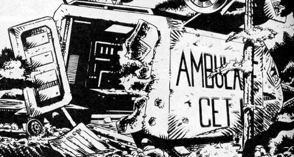

It's E.R. crossed with M*A*S*H ... in space! A true ensemble piece, we get tales of a downed ambulance in the warzone, a military assault on the titular orbiting hospital and a behind the lines tale where anti-human riots blend with anti-psychic pogroms to make for a dangerous rescue mission.
Art by Nigel Dobbyn
| Story Title | Parts | Pages | w indicates a wraparound coverCovers | Year(s) | Issues | Writer | Artist | Colourist | Letterer |
|---|---|---|---|---|---|---|---|---|---|
| Medivac 318 | 12 | 72 | 635: Nigel Dobbyn 1 | 1989 | 619-624, 635-640 | Hilary Robinson | Nigel Dobbyn | [b&w] | Jack Potter |
Supertitled: "Medivac Dispatches".Chemical Warfare | 1 | 5 | 0 | 1989 | WS2 | Hilary Robinson | Massimo Belardinelli | [b&w] | Gordon Robson |
| Arcturus | 12 | 60 | 0 | 1990 | 683-694 | Hilary Robinson | Nigel Dobbyn | [b&w] | Tom Frame |
| year | episodes | pages |
| 1979 | 0 | 0 |
| 1980 | 0 | 0 |
| 1981 | 0 | 0 |
| 1982 | 0 | 0 |
| 1983 | 0 | 0 |
| 1984 | 0 | 0 |
| 1985 | 0 | 0 |
| 1986 | 0 | 0 |
| 1987 | 0 | 0 |
| 1988 | 0 | 0 |
| 1989 | 13 | 77 |
| 1990 | 12 | 60 |
| 1991 | 0 | 0 |
| 1992 | 0 | 0 |
| 1993 | 0 | 0 |
| 1994 | 0 | 0 |
| 1995 | 0 | 0 |
| 1996 | 0 | 0 |
| 1997 | 0 | 0 |
| 1998 | 0 | 0 |
| 1999 | 0 | 0 |
| 2000 | 0 | 0 |